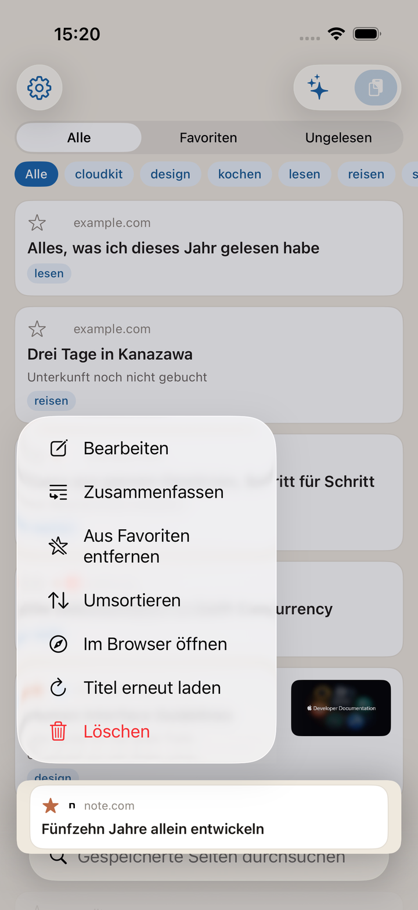
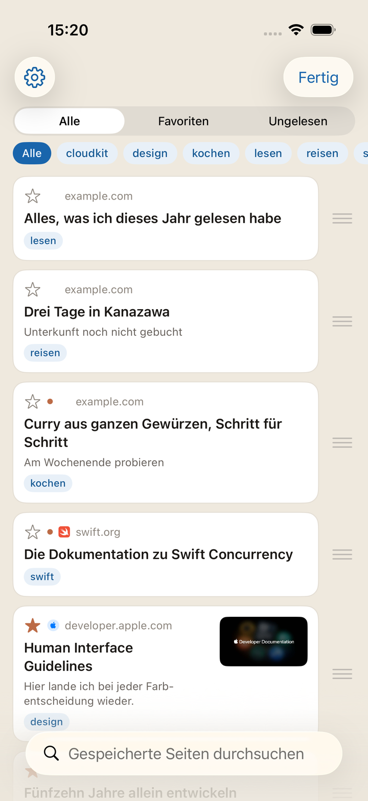
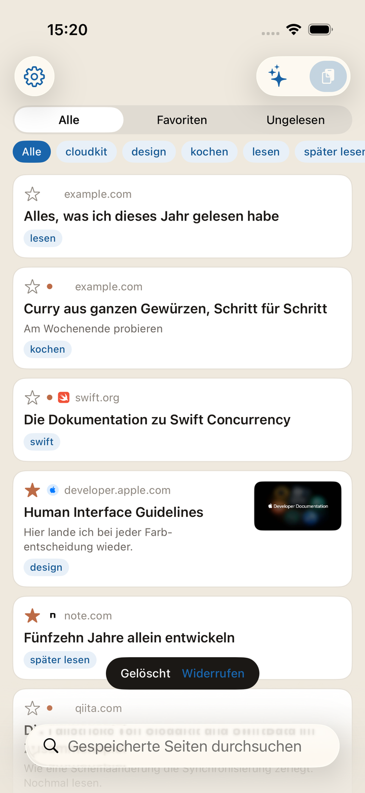

Es gibt zwei Wege hinein. Bei beiden ist das Sichern mit dem Tippen erledigt.
Öffnen Sie eine Seite in Safari oder anderswo, tippen Sie auf die Teilen-Taste und wählen Sie Kakesu. Steht es nicht in der Liste, schalten Sie Kakesu unter „Mehr“ im Teilen-Menü ein.
Sobald Sie es gewählt haben, ist gesichert. Im folgenden Bildschirm können Sie Tags und eine Notiz gleich an Ort und Stelle ergänzen, ihn aber ebenso gut ohne Eingabe schließen und später im Bearbeiten-Bildschirm nachtragen. Haben Sie sich vertippt, entfernt „Widerrufen“ oben links genau den eben angelegten Eintrag.
Mit einer URL in der Zwischenablage öffnen Sie die App und tippen oben rechts auf die Einsetzen-Taste.
Titel und Vorschaubilder füllen sich von selbst nach. Unmittelbar nach dem Sichern stehen dort nur URLs; die App holt sie nach und nach, solange sie geöffnet ist. Sichern bei schlechtem Empfang lässt das Sichern selbst nicht scheitern.
Dieselbe Seite zweimal zu sichern legt keinen zweiten Eintrag an
(Tracking-Parameter wie ?utm_source= und ein www. mehr oder weniger werden ignoriert).
Ungelesenes trägt einen Punkt, Favoriten einen Stern.
Durchsucht wird der Seitentext, nicht nur der Titel. Nach dem Sichern wird neben dem Titel auch der Anfang des Texts übernommen. Ein Wort, das Sie aus dem Text erinnern, gräbt die Seite also auch dann aus, wenn der Titel es nicht tut.
Über die Funkel-Taste oben rechts in der Liste fragen Sie in eigenen Worten. Fragen Sie etwa „Wie benutze ich das?“, „Was habe ich zuletzt gesichert?“ oder „Wo staut sich Ungelesenes?“; unter der Antwort stehen die verwendeten Einträge und lassen sich sofort öffnen.
Alles läuft auf Ihrem Gerät. Weder Frage noch Antwort gehen nach außen. Dem Modell übergeben wird eine Handvoll Einträge, die der Frage am nächsten kommen — Titel, Tags, Notiz, Website-Name — dazu Anzahlen und Ihre häufigsten Tags. Vollständige URLs werden nie übergeben.
Sie können weiterfragen. Eine Nachfrage wie „Wann habe ich das gesichert?“ wird im Licht des Vorherigen verstanden. Für ein anderes Thema tippen Sie oben links auf „Neue Unterhaltung“; alles bisherige ist damit gelöscht. Die Unterhaltung wird nirgends gespeichert, mit dem Schließen des Bildschirms ist sie fort.
„Kopieren“ unter der Antwort übernimmt sie, wie sie dasteht. Fragen Sie nach dieser Website, kommt die Antwort als antippbarer Link zurück. Nur diese Website wird je zu einem antippbaren Link. Die URLs Ihrer gesicherten Seiten stehen nie in einer Antwort.
Die Taste erscheint nur auf Geräten mit Apple Intelligence (iOS 26 oder neuer), sofern es in den iOS-Einstellungen eingeschaltet ist. Auf anderen Geräten gibt es sie gar nicht.
Halten Sie einen Artikel gedrückt und wählen Sie „Zusammenfassung“ — sie steht da, sobald sich der Bildschirm öffnet. Es ist kein Bildschirm zum Lesen. Er ist dafür da, zu entscheiden, ob Sie jetzt lesen.
Von dort aus können Sie zu diesem Artikel weiterfragen. Grundlage ist allein der Text dieser Seite; nichts anderes aus Ihrer Sammlung fließt ein. Eine Seite, deren Text nicht geholt werden konnte, lässt sich nicht zusammenfassen und sagt das auch.
Die fünf jüngsten Artikel-Unterhaltungen bleiben auf Ihrem Gerät, damit Sie beim nächsten Öffnen desselben Artikels dort weitermachen können. An iCloud gehen sie nicht, und auf ein neues Gerät kommen sie nicht mit.
Was geblieben ist, finden Sie oben links im Fragen-Bildschirm (das Sprechblasen-Zeichen). Löschen Sie einzeln oder mit „Alle löschen“ oben rechts auf einmal. Im Zusammenfassungs-Bildschirm löscht der Papierkorb oben links nur die Unterhaltung zu diesem Artikel.
Wie „Fragen“ erscheint es im Menü nur auf Geräten mit Apple Intelligence (iOS 26 oder neuer).


Öffnet in der App. Nach dem Schließen sind Sie wieder an derselben Stelle der Liste. Mit dem Öffnen gilt der Eintrag als gelesen.
Zeigt nur den Text, ohne Werbung und Beiwerk. Standardmäßig ist das ein. Wollen Sie Seiten so sehen, wie sie sind, schalten Sie Einstellungen → Anzeige → „Im Reader öffnen“ aus. Seiten ohne Reader-Unterstützung öffnen ohnehin wie gewohnt.
Schriftgröße und Hintergrundfarbe ändern Sie im Reader selbst.
Seiten, die eine Anmeldung brauchen oder eine Erweiterung, gehen von hier aus an Safari.

Gedrückt halten → Bearbeiten ändert Titel, Tags, Notiz und den Ungelesen-Status.
Sortiert wird über gedrückt halten → Sortieren → mit dem Finger ziehen. Während des Eingrenzens oder Suchens geht das nicht (einen Teil des Sichtbaren zu verschieben würde die Reihenfolge des Ganzen zerstören).
Für einen Eintrag, dessen Titel nie ankam, schickt gedrückt halten → Erneut holen die App noch einmal los.
Einstellungen → Stummschalten listet Ihre Tags mit Anzahlen. Wischen Sie eine Tag-Zeile nach links für Umbenennen und Löschen. Beides wirkt auf alle Einträge zugleich.
Ein gelöschtes Tag löscht keine Lesezeichen. Es wird ihnen nur abgenommen. Sind es viele Tags geworden, grenzt die Suche auf demselben Bildschirm sie ein.


Nach links wischen oder gedrückt halten → Löschen. Gleich danach erscheint „Widerrufen“ für ein paar Sekunden. Ein Tippen holt den Eintrag zurück. Lassen Sie es stehen, ist er erst dann wirklich weg.
Einstellungen → Stummschalten. Hinterlegen Sie eine Zeichenfolge aus URL oder Titel, und alles Passende verschwindet aus der Liste. Auch ganze Tags lassen sich ausblenden. In beiden Fällen bleibt die Regel erhalten und lässt sich ein- und ausschalten.
Die Anzahl des Ausgeblendeten steht unter der Liste. Ein Tippen öffnet die Einstellungen, dort wartet „Stummschalten“.


Einmal pro Woche wird alles Gesicherte als JSON in den Ordner „Kakesu“ in iCloud Drive geschrieben. Sie öffnen ihn in der Dateien-App, und er bleibt, wenn die App gelöscht wird.
Die letzten acht Sicherungen bleiben erhalten, ältere fallen weg.
Einstellungen → Daten bietet jederzeit Export (wohin, entscheiden Sie) und Import. Der Import überspringt bereits vorhandene URLs und fügt nur Fehlendes hinzu. Überschrieben wird nie. Auf demselben Bildschirm steht das Datum der letzten automatischen Sicherung.
Eine gesicherte URL ist nichts anderes als Ihr Verlauf. Geht Ihr Telefon durch fremde Hände, schalten Sie Einstellungen → App-Sperre ein. Beim Öffnen fragt die App dann nach Face ID / Touch ID oder dem Gerätecode.
Die Sperre deckt nur die Bildschirme der App ab. Die JSON-Kopie in iCloud Drive bleibt in der Dateien-App lesbar. Soll auch die Kopie verborgen sein, verwalten Sie sie auf der Seite der Dateien-App.
Ohne Code auf dem Gerät lässt sich die Funktion nicht nutzen (die Einstellung wird nicht antippbar).
Für das Sichern aus dem Teilen-Menü gilt die Sperre nie. Eine Abfrage vor dem Sichern würde genau die Seiten verlieren, die Sie hineinwerfen wollten.

„Über diese App“ in den Einstellungen öffnet die Nutzungsbedingungen und die Datenschutzerklärung. An derselben Stelle steht die Version der App — bitte nennen Sie sie, wenn Sie sich melden.
Legen Sie das Widget auf den Home-Bildschirm, zeigt es, wie viel ungelesen ist. Die kleine Größe nennt einen aktuellen Titel, die mittlere bis zu drei. Ein Tippen öffnet die App.
Bei eingeschalteter App-Sperre erscheint nur die Anzahl, sonst nichts. Keine Titel, keine Website-Namen im Widget. Der Home-Bildschirm liegt offen da, ohne Schloss davor.
Solange das Gerät gesperrt oder die App-Sperre aktiv ist, antwortet die Suche nicht. Es gibt keinen Grund, Gesichertes an ein nicht entsperrtes Gerät zu geben. Sichern geht auch gesperrt. Dass man etwas hineinwerfen kann, ist der Sinn — das wird nicht angehalten.
In der Kurzbefehle-App unter „Apps“ Kakesu wählen. In Automationen funktionieren sie ebenfalls.
Solange Sie mit demselben Apple-Account angemeldet sind, ist es schlicht da. Ein Konto muss nicht angelegt werden. Zum Beenden des Synchronisierens schalten Sie Kakesu unter iOS-Einstellungen → Apple-Account → iCloud aus.
Für alles, was hier nicht steht, ist die Kontaktseite der Weg.